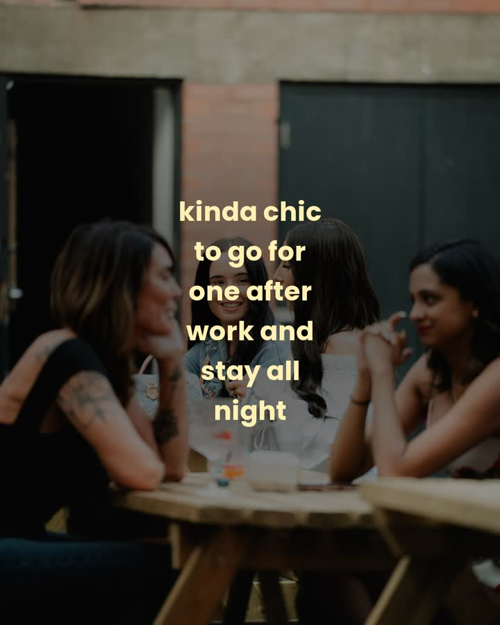

Week 1 · Mon 10 to Sun 16 Aug
this week
-
Mon 10
Kinda chic carousel no.1, the final eight. Post 7pm, zip is on this page.


 ready
ready
-
Tue 11
Drinks hero: the frozen pour. Caption: frozen, in leicester, yes really.
 ready
ready
-
Wed 12
What's On carousel. Lead slide a photo, not a graphic.
 needs line-up
needs line-up
-
Thu 13
Last week's photos: the 8 Aug delivery. Lead with the older crowd laughing.


 ready
ready
- Fri 14 Trend slot fallback: clip-bank montage with one pinned line. Doors 5pm stories. needs edit
-
Sat 15
Today post, noon: the selfie spot photo, doors 2pm. Live stories after.
 ready
ready
- Sun 16 Recap reel from Saturday's phone footage, pinned line: you're invited btw. needs sat footage
Week 2 · Mon 17 to Sun 23 Aug
premier league opens
-
Mon 17
Kinda chic carousel no.2, drinks led. All eight rendered.


 ready
ready
- Tue 18 PL opener announce for Friday, fixture over a 27 Jun crowd photo. The football set finally earns its keep. needs graphic
- Wed 19 What's On leading with the match. needs line-up
- Thu 20 Last week's photos from the delivery that lands this week. awaiting delivery
- Fri 21 Arsenal v Coventry, doors 5pm. Match-night reel, live through the game. match day
- Sat 22 Fixture post noon: first full PL Saturday, 3pm and 5:30 kick-offs. needs graphic
- Sun 23 Recap reel: first match night at the yard. needs sat footage
Week 3 · Mon 24 to Sun 30 Aug
bank holiday build-up
-
Mon 24
Kinda chic carousel no.3, people led. All eight rendered.


 ready
ready
- Tue 25 Bank holiday announce: three trading days this weekend, Fri, Sat and Monday. needs graphic
- Wed 26 What's On. needs line-up
- Thu 27 Last week's photos. awaiting delivery
- Fri 28 Trend slot + doors 5pm. needs edit
- Sat 29 Today post + live stories. pick from pool
- Sun 30 Recap reel ending on: again tomorrow. Monday trades. needs sat footage
Week 4 · Mon 31 Aug to Sun 6 Sep
bank holiday monday trades
- Mon 31 BANK HOLIDAY, OPEN 2pm. Today post noon, doors story 2pm, live all day. No carousel. live day
-
Tue 1
Kinda chic carousel no.4, music and moments, shifted from Monday. Closes on the ex neon.


 ready
ready
- Wed 2 What's On. needs line-up
- Thu 3 Last week's photos: the bank holiday weekend, three days of material. awaiting delivery
- Fri 4 Trend slot + doors 5pm. needs edit
- Sat 5 Today post + live stories. pick from pool
- Sun 6 Recap reel. needs sat footage
Week 5 · Mon 7 to Sun 13 Sep
- Mon 7 Kinda chic carousel no.5 from the background re-pairing pass. pending agent
- Tue 8 Drinks or staff hero from the unused pool. pick from pool
- Wed 9 What's On. needs line-up
- Thu 10 Last week's photos. awaiting delivery
- Fri 11 Trend slot: first of the shoot-day formats if filmed by now. needs shoot day
- Sat 12 Today post + live stories. pick from pool
- Sun 13 Recap reel. needs sat footage
Week 6 · Mon 14 to Sun 20 Sep
two weekends left
- Mon 14 Kinda chic carousel no.6: rerun the best slides of carousels 1 to 4 by saves. data led
- Tue 15 Announce: two weekends left of the season. needs graphic
- Wed 16 What's On. needs line-up
- Thu 17 Last week's photos. awaiting delivery
- Fri 18 Trend slot with last-chance framing. needs edit
- Sat 19 Today post + live stories. pick from pool
- Sun 20 Recap reel: one more weekend like this left. needs sat footage
Week 7 · Mon 21 to Sun 27 Sep
season close, sat 26
- Mon 21 Kinda chic greatest hits, the season's best eight. data led
- Tue 22 Announce: the last friday and the last saturday. needs graphic
- Wed 23 What's On, final week. needs line-up
- Thu 24 Last week's photos. awaiting delivery
- Fri 25 The final friday. Repost the empty-to-full as: one more like this left. needs edit
- Sat 26 CLOSING DAY. Today post noon, all-day stories, doors 2pm. live day
- Sun 27 Season farewell recap: thank you leicester, see you in may. Tease halloween and winter. needs footage